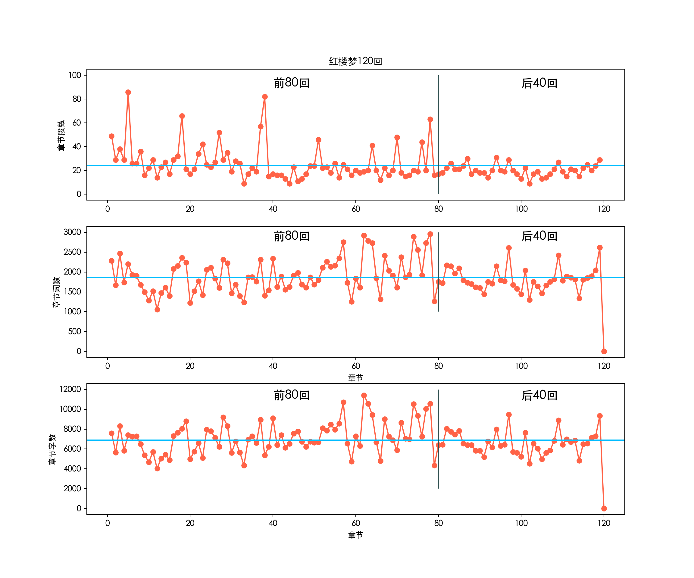
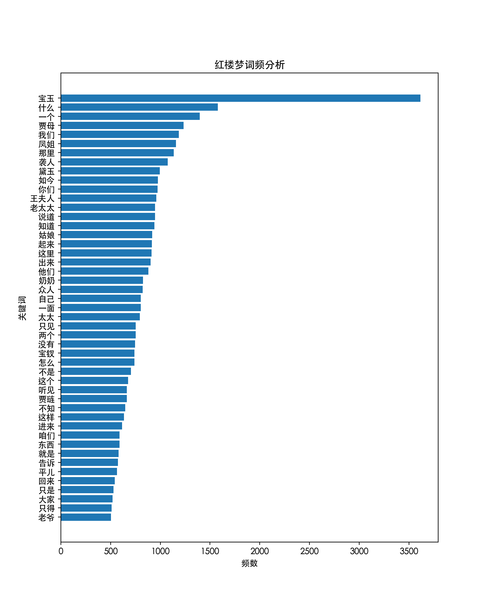
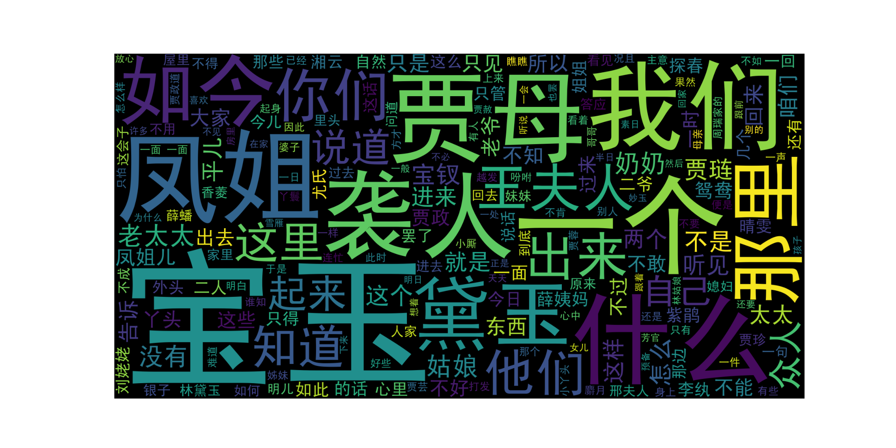
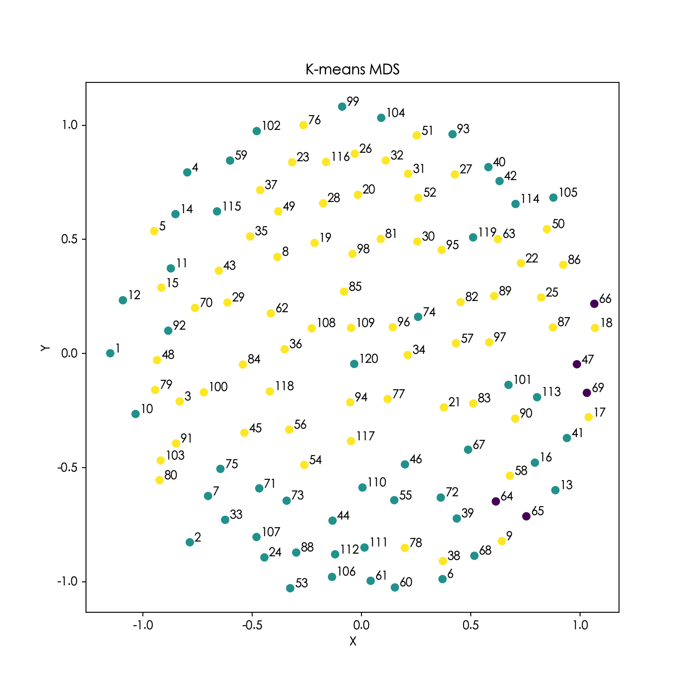
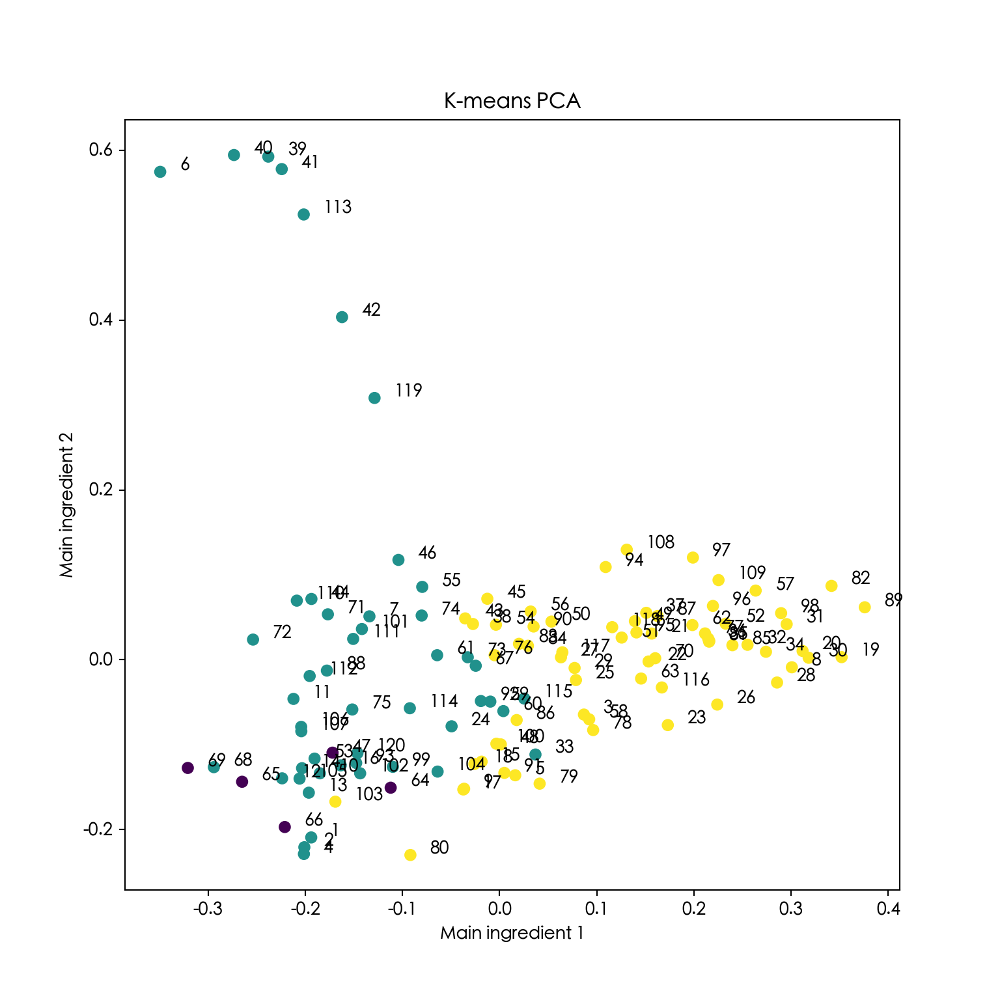
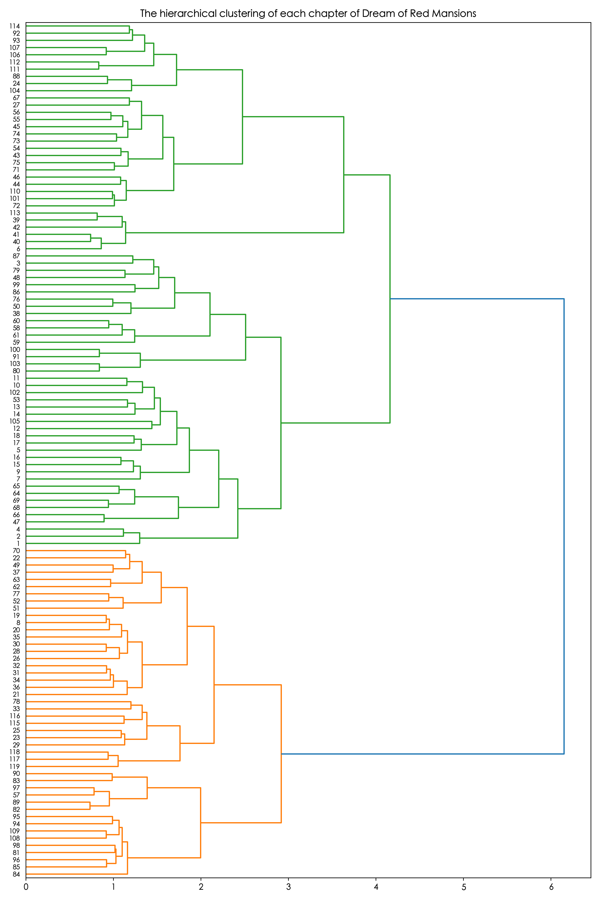

A clustering project
## Load the data package
import numpy as np
import pandas as pd
import matplotlib.pyplot as plt
import matplotlib
plt.rcParams['font.sans-serif']=['SimHei'] # It is used to display Chinese labels normally.
plt.rcParams['axes.unicode_minus']=False # It is used to display negative signs normally.
matplotlib.rc("font",family='Heiti TC')
# %matplotlib inline
import jieba
import nltk
import warnings
warnings.filterwarnings('ignore')The introduction of the data set is as follows:
+ Dream_of_the_Red_Mansion.txt is the txt version of the novel Dream of Red Mansions, and the coding format is utf-8.
+ Red_Mansion_Dictionary.txt is a dictionary containing exclusive characters in Dream of Red Mansions, which is used to assist participles.
+ stop_words.txt is a list of disabled words, which contains common prohibited words such as numbers and special symbols.
## Set the display preferences
import warnings
warnings.filterwarnings('ignore')
pd.set_option("display.max_rows",None)
## Read articles, disabled words and required dictionaries
stop_words = pd.read_csv("./input/stop_words.txt",header=None,names = ["stop_words"])
dictionary = pd.read_csv("./input/Red_Mansion_Dictionary.txt",header=None, names=["dictionary"])
content = pd.read_csv("./input/Dream_of_the_Red_Mansion.txt",header=None,names = ["content"])
print(content.head(),'\n\n',dictionary.head(),'\n\n',stop_words.head()) content
0 第1卷
1 第一回 甄士隐梦幻识通灵 贾雨村风尘怀闺秀
2 此开卷第一回也。作者自云：因曾历过一番梦幻之后，故将真事隐去，而借“通灵”之说，撰此<<...
3 此回中凡用“梦”用“幻”等字，是提醒阅者眼目，亦是此书立意本旨。
4 列位看官：你道此书从何而来？说起根由虽近荒唐，细按则深有趣味。待在下将此来历注明，方使阅...
dictionary
0 黛玉
1 宝钗
2 贾演
3 贾寅
4 贾源
stop_words
0 $
1 0
2 1
3 2
4 3Next, we need to preprocess the text data and integrate the display format. The first thing that needs to be analysed is whether there are missing values in the read data, which can be judged by using the isnull() function in Pandas.
## Check whether there are blank lines in the article. If there are, delete them.
np.sum(pd.isnull(content)) np.int64(0)For the sake of beauty and simplicity of observation, we delete the lines occupied by text such as “Volume 1” and “Volume 2”, use regular expressions to match, and filter the indexes that meet the conditions.
## Use regular expressions to choose the corresponding index.
index_of_juan = content.content.str.contains("^第+.+卷")
## Delete unnecessary rows according to the index and reset the index.
content = content[~index_of_juan].reset_index(drop=True)
content.head() content
0 第一回 甄士隐梦幻识通灵 贾雨村风尘怀闺秀
1 此开卷第一回也。作者自云：因曾历过一番梦幻之后，故将真事隐去，而借“通灵”之说，撰此<<...
2 此回中凡用“梦”用“幻”等字，是提醒阅者眼目，亦是此书立意本旨。
3 列位看官：你道此书从何而来？说起根由虽近荒唐，细按则深有趣味。待在下将此来历注明，方使阅...
4 原来女娲氏炼石补天之时，于大荒山无稽崖练成高经十二丈，方经二十四丈顽石三万六千五百零一块...Next, we extract the title of each chapter and process the characters.
## Use regular expressions to choose the corresponding index.
index_of_hui = content.content.str.match("^第+.+回")
## Choose the title of each chapter according to the index
chapter_names = content.content[index_of_hui].reset_index(drop=True)
chapter_names.head()0 第一回 甄士隐梦幻识通灵 贾雨村风尘怀闺秀
1 第二回 贾夫人仙逝扬州城 冷子兴演说荣国府
2 第三回 贾雨村夤缘复旧职 林黛玉抛父进京都
3 第四回 薄命女偏逢薄命郎 葫芦僧乱判葫芦案
4 第五回 游幻境指迷十二钗 饮仙醪曲演红楼梦
Name: content, dtype: str## Process the chapter name and divide the string according to the space.
chapter_names_split = chapter_names.str.split(" ").reset_index(drop=True)
chapter_names_split.head()0 [第一回, 甄士隐梦幻识通灵, 贾雨村风尘怀闺秀]
1 [第二回, 贾夫人仙逝扬州城, 冷子兴演说荣国府]
2 [第三回, 贾雨村夤缘复旧职, 林黛玉抛父进京都]
3 [第四回, 薄命女偏逢薄命郎, 葫芦僧乱判葫芦案]
4 [第五回, 游幻境指迷十二钗, 饮仙醪曲演红楼梦]
Name: content, dtype: objectAfter processing the chapter title, we calculate how many lines and words each chapter contains, and integrate the content of each chapter to form a new DataFrame object.
## Establish a data box to save data
data = pd.DataFrame(list(chapter_names_split),columns=["chapter","left_name","right_name"])
## Add chapter serial number and chapter name column
data["chapter_number"] = np.arange(1,121)
data["chapter_name"] = data.left_name+","+data.right_name
## Add the line position at the beginning of each chapter
data["start_id"] = index_of_hui[index_of_hui == True].index
## Add the line position at the end of each chapter
data["end_id"] = data["start_id"][1:len(data["start_id"])].reset_index(drop = True) - 1
data["end_id"][[len(data["end_id"])-1]] = content.index[-1]
## Add the number of lines for each chapter
data["length_of_chapters"] = data.end_id - data.start_id
data.head() chapter left_name right_name ... start_id end_id length_of_chapters
0 第一回 甄士隐梦幻识通灵 贾雨村风尘怀闺秀 ... 0 49.0 49.0
1 第二回 贾夫人仙逝扬州城 冷子兴演说荣国府 ... 50 79.0 29.0
2 第三回 贾雨村夤缘复旧职 林黛玉抛父进京都 ... 80 118.0 38.0
3 第四回 薄命女偏逢薄命郎 葫芦僧乱判葫芦案 ... 119 148.0 29.0
4 第五回 游幻境指迷十二钗 饮仙醪曲演红楼梦 ... 149 235.0 86.0
[5 rows x 8 columns]## Add the content of each chapter
data["content"] = ''
data["content"] = data["content"].astype(object)
for i in data.index:
if pd.isna(data.end_id[i]) or pd.isna(data.start_id[i]):
continue
chapter_id = np.arange(data.start_id[i]+1, int(data.end_id[i]))
data.at[i, "content"] = "".join(list(content.content[chapter_id])).replace(" ","")
## Add the number of words per chapter
data["length_of_characters"] = data.content.apply(len)
data.head(2) chapter ... length_of_characters
0 第一回 ... 7594
1 第二回 ... 5659
[2 rows x 10 columns]## Divide the whole text of Dream of Red Mansions
row, col = data.shape
jieba.load_userdict('./input/Red_Mansion_Dictionary.txt')
## Build cutted_words as a plain dict first
cutted_words_dict = {}
for i in data.index:
cutwords = list(jieba.cut(data['content'][i]))
cutwords = [w for w in cutwords if len(w) > 1]
cutwords = [w for w in cutwords if w not in stop_words]
cutted_words_dict[i] = cutwords
## Assign via a temporary column built from the dict — bypasses all dtype inference
temp = pd.DataFrame({'cutted_words': pd.Series(cutted_words_dict)})
data = data.join(temp, rsuffix='_new')
## If column already existed, replace it
if 'cutted_words_new' in data.columns:
data['cutted_words'] = data['cutted_words_new']
data = data.drop(columns=['cutted_words_new'])
## Verify before computing length
print(data['cutted_words'].iloc[0][:10]) # Should show a list of words['开卷', '第一回', '作者', '自云', '因曾', '历过', '一番', '梦幻', '之后', '真事']data['length_of_words'] = data['cutted_words'].apply(len)
data['cutted_words'].head()0 [开卷, 第一回, 作者, 自云, 因曾, 历过, 一番, 梦幻, 之后, 真事, 隐去, ...
1 [诗云, 一局, 输赢, 料不真, 香销, 尽尚, 逡巡, 欲知, 目下, 兴衰, 旁观, ...
2 [却说, 雨村, 回头, 看时, 不是, 别人, 乃是, 当日, 同僚, 一案, 参革, 张...
3 [却说, 黛玉, 姊妹, 王夫人, 王夫人, 兄嫂, 计议, 家务, 姨母, 家遭, 人命官...
4 [第四回, 薛家, 母子, 荣府内, 寄居, 事略, 表明, 此回, 不能, 如今, 且说,...
Name: cutted_words, dtype: objectWe can draw a scatter plot to show the number of paragraphs and words of each chapter, so as to observe the trend of plot development.
plt.figure(figsize=(12,10))
plt.subplot(3,1,1)
plt.plot(data.chapter_number,data.length_of_chapters,marker="o", linestyle="-",color = "tomato")
plt.ylabel("章节段数")
plt.title("红楼梦120回")
plt.hlines(np.mean(data.length_of_chapters),-5,125,"deepskyblue")
plt.vlines(80,0,100,"darkslategray")
plt.text(40,90,'前80回',fontsize = 15)
plt.text(100,90,'后40回',fontsize = 15)
plt.xlim((-5,125))(-5.0, 125.0)plt.subplot(3,1,2)
plt.plot(data.chapter_number,data.length_of_words,marker="o", linestyle="-",color = "tomato")
plt.xlabel("章节")
plt.ylabel("章节词数")
plt.hlines(np.mean(data.length_of_words),-5,125,"deepskyblue")
plt.vlines(80,1000,3000,"darkslategray")
plt.text(40,2800,'前80回',fontsize = 15)
plt.text(100,2800,'后40回',fontsize = 15)
plt.xlim((-5,125))(-5.0, 125.0)plt.subplot(3,1,3)
plt.plot(data.chapter_number,data.length_of_characters,marker="o", linestyle="-",color = "tomato")
plt.xlabel("章节")
plt.ylabel("章节字数")
plt.hlines(np.mean(data.length_of_characters),-5,125,"deepskyblue")
plt.vlines(80,2000,12000,"darkslategray")
plt.text(40,11000,'前80回',fontsize = 15)
plt.text(100,11000,'后40回',fontsize = 15)
plt.xlim((-5,125))(-5.0, 125.0)plt.show()
The blue line represents the average number of paragraphs and words in the chapter. It can be seen that the average number of paragraphs in each chapter is about 25, the average number of times is about 1900, and the average number of words is about 7,000, which is the most in 60-80 times.
The question of “Who is the author of the Dream of Red Mansions” has caused a long debate in the Chinese literary community and has continued to this day. Many scholars believe that Cao Xueqin’s original work only has 80 times left, and the remaining 40 times are continued by Gao E in the Qing Dynasty. We divide the first 80 times and the last 40 times according to the gray line. From these interrelationships, it can be seen that there are still some differences between the first 80 chapters and the last 40 chapters.
After the word segmentation is completed, we can count the word frequency of the whole book, calculate the frequency of each word and sort it.
words = np.concatenate(data.cutted_words)
# Statistical word frequency
word_df = pd.DataFrame({"word":words})
word_frequency = word_df.groupby(by=["word"])["word"].agg({"count"}).reset_index()
word_frequency.columns = ["word","frequency"]
word_frequency = word_frequency.reset_index().sort_values(by="frequency",ascending=False)
word_frequency.head(10) index word frequency
14534 14534 宝玉 3615
4166 4166 什么 1578
35 35 一个 1398
35016 35016 贾母 1233
18673 18673 我们 1185
7674 7674 凤姐 1159
37394 37394 那里 1135
33547 33547 袭人 1074
40255 40255 黛玉 995
13622 13622 如今 975我们通过条形图将出现次数超过500的词语展示出来。
plt.figure(figsize=(8,10))
frequent_words = word_frequency.loc[word_frequency.frequency > 500].sort_values('frequency')
plt.barh(y = frequent_words["word"],width = frequent_words["frequency"])
plt.xticks(size = 10) (array([ 0., 500., 1000., 1500., 2000., 2500., 3000., 3500., 4000.]), [Text(0.0, 0, '0'), Text(500.0, 0, '500'), Text(1000.0, 0, '1000'), Text(1500.0, 0, '1500'), Text(2000.0, 0, '2000'), Text(2500.0, 0, '2500'), Text(3000.0, 0, '3000'), Text(3500.0, 0, '3500'), Text(4000.0, 0, '4000')])plt.ylabel("关键词")
plt.xlabel("频数")
plt.title("红楼梦词频分析")
plt.show()
It can be seen from the picture that Baoyu appears the most often and is the protagonist in the Dream of Red Mansions. Next, we will draw word clouds through the wordcloud library in Python.
from wordcloud import WordCloud
plt.figure(figsize=(10,5))
wordcloud = WordCloud(font_path='./input/SimHei.ttf',margin=5, width=1800, height=900)
wordcloud.generate("/".join(np.concatenate(data.cutted_words)))<wordcloud.wordcloud.WordCloud object at 0x128524d50>plt.imshow(wordcloud)
plt.axis("off")(np.float64(-0.5), np.float64(1799.5), np.float64(899.5), np.float64(-0.5))plt.show()
Before text clustering, we need to vectorise words. Here, the vectorisation method is to calculate the TF-IDF matrix.
TF-IDF means word frequency inverse document frequency. If a word appears frequently in an article and rarely appears in other articles, the importance of the word is higher. The importance of a word increases in proportion to the number of times it appears in the document, but at the same time decreases in inverse proportion to the frequency of its appearance in the corpus.
After the TfidfVectoriser model is established, the TF-IDF matrix can be trained through the fit_transform() function to convert words into words; all texts can be seen through get_feature_names() This keyword; view the keyword number through the vocabulary_ attribute. The output of the TfidfVectoriser model is in the form of a matrix, and the results of the TF-IDF matrix can be seen through the toarray() function.
from sklearn.feature_extraction.text import TfidfVectorizer
content = []
for cutword in data.cutted_words:
content.append(" ".join(cutword))
## Build a corpus and calculate the TF-IDF matrix of the document
transformer = TfidfVectorizer()
tfidf = transformer.fit_transform(content)
## TF-IDF is stored in the form of a sparse matrix, converting TF-IDF into an array, document-word matrix
word_vectors = tfidf.toarray()
word_vectorsarray([[0. , 0. , 0.00725974, ..., 0. , 0. ,
0. ],
[0. , 0. , 0.00901246, ..., 0. , 0. ,
0. ],
[0.04304655, 0. , 0.0490238 , ..., 0. , 0. ,
0. ],
...,
[0. , 0. , 0. , ..., 0. , 0. ,
0. ],
[0. , 0. , 0.00732303, ..., 0. , 0. ,
0. ],
[0. , 0. , 0. , ..., 0. , 0. ,
0. ]], shape=(120, 40347))K-means clustering: For a given sample set A, sample set A is divided into K clusters \(A_1,A_2,...,A_K\) according to the size of the distance between the samples. Make the points in these clusters as closely as possible, and make the distance between the clusters as large as possible.
The K-Means algorithm is an unsupervised clustering algorithm. The purpose is to make each point belong to the cluster \(A_i\) corresponding to the nearest mean value (this is the cluster centre). Here, the K-means clustering algorithm in the sklearn library is used to cluster and analyse the data to obtain the cluster to which each chapter belongs.
The number of parameter clusters n_clusters = 3, random seeds random_state = 0.
from sklearn.cluster import KMeans
## K-mean clustering of word_vectors
kmeans = KMeans(n_clusters=3, random_state=0).fit(word_vectors)
## The categories obtained by clustering
kmean_labels = data[["chapter_name","chapter"]]
kmean_labels["cluster"] = kmeans.labels_
kmean_labels chapter_name chapter cluster
0 甄士隐梦幻识通灵,贾雨村风尘怀闺秀 第一回 1
1 贾夫人仙逝扬州城,冷子兴演说荣国府 第二回 1
2 贾雨村夤缘复旧职,林黛玉抛父进京都 第三回 2
3 薄命女偏逢薄命郎,葫芦僧乱判葫芦案 第四回 1
4 游幻境指迷十二钗,饮仙醪曲演红楼梦 第五回 2
5 贾宝玉初试云雨情,刘姥姥一进荣国府 第六回 1
6 送宫花贾琏戏熙凤,宴宁府宝玉会秦钟 第七回 1
7 比通灵金莺微露意,探宝钗黛玉半含酸 第八回 2
8 恋风流情友入家塾,起嫌疑顽童闹学堂 第九回 2
9 金寡妇贪利权受辱,张太医论病细穷源 第十回 1
10 庆寿辰宁府排家宴,见熙凤贾瑞起淫心 第十一回 1
11 王熙凤毒设相思局,贾天祥正照风月鉴 第十二回 1
12 秦可卿死封龙禁尉,王熙凤协理宁国府 第十三回 1
13 林如海捐馆扬州城,贾宝玉路谒北静王 第十四回 1
14 王凤姐弄权铁槛寺,秦鲸卿得趣馒头庵 第十五回 2
15 贾元春才选凤藻宫,秦鲸卿夭逝黄泉路 第十六回 1
16 大观园试才题对额,荣国府归省庆元宵 第十七回 2
17 隔珠帘父女勉忠勤,搦湘管姊弟裁题咏 第十八回 2
18 情切切良宵花解语,意绵绵静日玉生香 第十九回 2
19 王熙凤正言弹妒意,林黛玉俏语谑娇音 第二十回 2
20 贤袭人娇嗔箴宝玉,俏平儿软语救贾琏 第二十一回 2
21 听曲文宝玉悟禅机,制灯迷贾政悲谶语 第二十二回 2
22 西厢记妙词通戏语,牡丹亭艳曲警芳心 第二十三回 2
23 醉金刚轻财尚义侠,痴女儿遗帕惹相思 第二十四回 1
24 魇魔法姊弟逢五鬼,红楼梦通灵遇双真 第二十五回 2
25 蜂腰桥设言传心事,潇湘馆春困发幽情 第二十六回 2
26 滴翠亭杨妃戏彩蝶,埋香冢飞燕泣残红 第二十七回 2
27 蒋玉菡情赠茜香罗,薛宝钗羞笼红麝串 第二十八回 2
28 享福人福深还祷福,痴情女情重愈斟情 第二十九回 2
29 宝钗借扇机带双敲,龄官划蔷痴及局外 第三十回 2
30 撕扇子作千金一笑,因麒麟伏白首双星 第三十一回 2
31 诉肺腑心迷活宝玉,含耻辱情烈死金钏 第三十二回 2
32 手足耽耽小动唇舌,不肖种种大承笞挞 第三十三回 1
33 情中情因情感妹妹,错里错以错劝哥哥 第三十四回 2
34 白玉钏亲尝莲叶羹,黄金莺巧结梅花络 第三十五回 2
35 绣鸳鸯梦兆绛芸轩,识分定情悟梨香院 第三十六回 2
36 秋爽斋偶结海棠社,蘅芜苑夜拟菊花题 第三十七回 2
37 林潇湘魁夺菊花诗,薛蘅芜讽和螃蟹咏 第三十八回 2
38 村姥姥是信口开合,情哥哥偏寻根究底 第三十九回 1
39 史太君两宴大观园,金鸳鸯三宣牙牌令 第四十回 1
40 栊翠庵茶品梅花雪,怡红院劫遇母蝗虫 第四十一回 1
41 蘅芜君兰言解疑癖,潇湘子雅谑补余香 第四十二回 1
42 闲取乐偶攒金庆寿,不了情暂撮土为香 第四十三回 2
43 变生不测凤姐泼醋,喜出望外平儿理妆 第四十四回 1
44 金兰契互剖金兰语,风雨夕闷制风雨词 第四十五回 2
45 尴尬人难免尴尬事,鸳鸯女誓绝鸳鸯偶 第四十六回 1
46 呆霸王调情遭苦打,冷郎君惧祸走他乡 第四十七回 0
47 滥情人情误思游艺,慕雅女雅集苦吟诗 第四十八回 2
48 琉璃世界白雪红梅,脂粉香娃割腥啖膻 第四十九回 2
49 芦雪庵争联即景诗,暖香坞雅制春灯谜 第五十回 2
50 薛小妹新编怀古诗,胡庸医乱用虎狼药 第五十一回 2
51 俏平儿情掩虾须镯,勇晴雯病补雀金裘 第五十二回 2
52 宁国府除夕祭宗祠,荣国府元宵开夜宴 第五十三回 1
53 史太君破陈腐旧套,王熙凤效戏彩斑衣 第五十四回 2
54 辱亲女愚妾争闲气,欺幼主刁奴蓄险心 第五十五回 1
55 敏探春兴利除宿弊,时宝钗小惠全大体 第五十六回 2
56 慧紫鹃情辞试忙玉,慈姨妈爱语慰痴颦 第五十七回 2
57 杏子阴假凤泣虚凰,茜纱窗真情揆痴理 第五十八回 2
58 柳叶渚边嗔莺咤燕,绛云轩里召将飞符 第五十九回 1
59 茉莉粉替去蔷薇硝,玫瑰露引来茯苓霜 第六十回 1
60 投鼠忌器宝玉瞒赃,判冤决狱平儿行权 第六十一回 1
61 憨湘云醉眠芍药茵,呆香菱情解石榴裙 第六十二回 2
62 寿怡红群芳开夜宴,死金丹独艳理亲丧 第六十三回 2
63 幽淑女悲题五美吟,浪荡子情遗九龙佩 第六十四回 0
64 贾二舍偷娶尤二姨,尤三姐思嫁柳二郎 第六十五回 0
65 情小妹耻情归地府,冷二郎一冷入空门 第六十六回 0
66 见土仪颦卿思故里,闻秘事凤姐讯家童 第六十七回 1
67 苦尤娘赚入大观园,酸凤姐大闹宁国府 第六十八回 1
68 弄小巧用借剑杀人,觉大限吞生金自逝 第六十九回 0
69 林黛玉重建桃花社,史湘云偶填柳絮词 第七十回 2
70 嫌隙人有心生嫌隙,鸳鸯女无意遇鸳鸯 第七十一回 1
71 王熙凤恃强羞说病,来旺妇倚势霸成亲 第七十二回 1
72 痴丫头误拾绣春囊,懦小姐不问累金凤 第七十三回 1
73 惑奸谗抄检大观园,矢孤介杜绝宁国府 第七十四回 1
74 开夜宴异兆发悲音,赏中秋新词得佳谶 第七十五回 1
75 凸碧堂品笛感凄清,凹晶馆联诗悲寂寞 第七十六回 2
76 俏丫鬟抱屈夭风流,美优伶斩情归水月 第七十七回 2
77 老学士闲征诡画词,痴公子杜撰芙蓉诔 第七十八回 2
78 薛文龙悔娶河东狮,贾迎春误嫁中山狼 第七十九回 2
79 美香菱屈受贪夫棒,王道士胡诌妒妇方 第八十回 2
80 占旺相四美钓游鱼,奉严词两番入家塾 第八十一回 2
81 老学究讲义警顽心,病潇湘痴魂惊恶梦 第八十二回 2
82 省宫闱贾元妃染恙,闹闺阃薛宝钗吞声 第八十三回 2
83 试文字宝玉始提亲,探惊风贾环重结怨 第八十四回 2
84 贾存周报升郎中任,薛文起复惹放流刑 第八十五回 2
85 受私贿老官翻案牍,寄闲情淑女解琴书 第八十六回 2
86 感深秋抚琴悲往事,坐禅寂走火入邪魔 第八十七回 2
87 博庭欢宝玉赞孤儿,正家法贾珍鞭悍仆 第八十八回 1
88 人亡物在公子填词,蛇影杯弓颦卿绝粒 第八十九回 2
89 失绵衣贫女耐嗷嘈,送果品小郎惊叵测 第九十回 2
90 纵淫心宝蟾工设计,布疑阵宝玉妄谈禅 第九十一回 2
91 评女传巧姐慕贤良,玩母珠贾政参聚散 第九十二回 1
92 甄家仆投靠贾家门,水月庵掀翻风月案 第九十三回 1
93 宴海棠贾母赏花妖,失宝玉通灵知奇祸 第九十四回 2
94 因讹成实元妃薨逝,以假混真宝玉疯颠 第九十五回 2
95 瞒消息凤姐设奇谋,泄机关颦儿迷本性 第九十六回 2
96 林黛玉焚稿断痴情,薛宝钗出闺成大礼 第九十七回 2
97 苦绛珠魂归离恨天,病神瑛泪洒相思地 第九十八回 2
98 守官箴恶奴同破例,阅邸报老舅自担惊 第九十九回 1
99 破好事香菱结深恨,悲远嫁宝玉感离情 第一零零回 2
100 大观园月夜感幽魂,散花寺神签惊异兆 第一零一回 1
101 宁国府骨肉病灾襟,大观园符水驱妖孽 第一零二回 1
102 施毒计金桂自焚身,昧真禅雨村空遇旧 第一零三回 2
103 醉金刚小鳅生大浪,痴公子余痛触前情 第一零四回 1
104 锦衣军查抄宁国府,骢马使弹劾平安州 第一零五回 1
105 王熙凤致祸抱羞惭,贾太君祷天消祸患 第一零六回 1
106 散余资贾母明大义,复世职政老沐天恩 第一零七回 1
107 强欢笑蘅芜庆生辰,死缠绵潇湘闻鬼哭 第一零八回 2
108 候芳魂五儿承错爱,还孽债迎女返真元 第一零九回 2
109 史太君寿终归地府,王凤姐力诎失人心 第一一零回 1
110 鸳鸯女殉主登太虚,狗彘奴欺天招伙盗 第一一一回 1
111 活冤孽妙尼遭大劫,死雠仇赵妾赴冥曹 第一一二回 1
112 忏宿冤凤姐托村妪,释旧憾情婢感痴郎 第一一三回 1
113 王熙凤历幻返金陵,甄应嘉蒙恩还玉阙 第一一四回 1
114 惑偏私惜春矢素志,证同类宝玉失相知 第一一五回 1
115 得通灵幻境悟仙缘,送慈柩故乡全孝道 第一一六回 2
116 阻超凡佳人双护玉,欣聚党恶子独承家 第一一七回 2
117 记微嫌舅兄欺弱女,惊谜语妻妾谏痴人 第一一八回 2
118 中乡魁宝玉却尘缘,沐皇恩贾家延世泽 第一一九回 1
119 甄士隐详说太虚情,贾雨村归结红楼梦 第一二零回 1## Check how many chapters there are in each cluster
count = kmean_labels.groupby("cluster")['chapter'].count()
countcluster
0 5
1 49
2 66
Name: chapter, dtype: int64By setting the number of clusters to 3, we can roughly measure which chapters’ text content is closer. For example, the chapters with cluster number 2 are 4th, 79th, 80th, 91st, 103rd, etc., which shows that the text content of these chapters is relatively close. Next, use dimension reduction technology to reduce the dimension of the TF-IDF matrix, and visualise the cluster of K-means clusters compared with the dimension reduction data.
Multidimensional scaling (abbreviated as MDS, also translated as “multidimensional scaling”), also known as “Similarity structure analysis”, is a method of multivariable analysis. One is a common method of statistical empirical analysis in sociology, quantitative psychology, marketing and so on. MDS keeps the relative distance between samples as much as possible when reducing the data dimension.
from sklearn.manifold import MDS
## Use MDS to reduce the dimension of data
mds = MDS(n_components=2,random_state=12)
mds_results = mds.fit_transform(word_vectors)
mds_results.shape(120, 2)## Draw the results after dimension reduction
plt.figure(figsize=(8,8))
plt.scatter(mds_results[:,0],mds_results[:,1],c = kmean_labels.cluster)
for i in (np.arange(120)):
plt.text(mds_results[i,0]+0.02,mds_results[i,1],s = data.chapter_number[i])
plt.xlabel("X")
plt.ylabel("Y")
plt.title("K-means MDS")
plt.show()
After using MDS to reduce the word vector of each chapter to 2 dimensional, the cluster comparison of K-means cluster is visualised to the dimension reduction data, which can roughly verify the validity of the cluster results. For example, cluster 0 (purple dot) and cluster 2 (yellow) are displayed around the figure respectively, and the chapters of cluster 1 (green) are mainly distributed in the middle of the figure, and the relative distance between the chapters of each cluster is relatively small.
PCA dimension reduction is a common data dimension reduction method. Its purpose is to convert high-dimensional data to low-dimensional data under the premise of small “information” loss, so as to reduce the amount of calculation. PCA is usually used for the exploration and visualisation of high-dimensional data sets, and can also be used for data compression, data preprocessing, etc.
from sklearn.decomposition import PCA
## Use PCA to reduce the dimension of data
pca = PCA(n_components=2)
pca.fit(word_vectors)PCA(n_components=2)In a Jupyter environment, please rerun this cell to show the HTML representation or trust the notebook.
print(pca.explained_variance_ratio_)[0.03773426 0.02864864]## Downsiming the data
pca_results = pca.fit_transform(word_vectors)
print(pca_results.shape)(120, 2)## Draw the results after dimension reduction
plt.figure(figsize=(8,8))
plt.scatter(pca_results[:,0],pca_results[:,1],c = kmean_labels.cluster)
for i in np.arange(120):
plt.text(pca_results[i,0]+0.02,pca_results[i,1],s = data.chapter_number[i])
plt.xlabel("Main ingredient 1")
plt.ylabel("Main ingredient 2")
plt.title("K-means PCA")
plt.show() 
After using PCA to reduce the word vectors of each chapter to 2D, a similar conclusion can be drawn by comparing the clusters of K-means clusters with the dimension reduction data. The two main components of cluster 2 (yellow) are relatively small and distributed in the lower left part of the figure. The main components of cluster 1 (green) are relatively large and distributed to the right, which verifies the validity of the cluster results.
The above has successfully used K-means to cluster and draw documents. Now you can try another clustering algorithm. Ward clustering is a condensed clustering algorithm, that is, each processing stage divides the two objects with the smallest distance into one class. I use the pre-calculated cosine distance matrix to calculate the distance matrix, and then draw it into a tree diagram.
Hierarchical Clustering is a kind of clustering algorithm that creates a hierarchical nested cluster tree by calculating the similarity between different categories of data points. In a cluster tree, the raw data points of different categories are the lowest layer of the tree, and the top layer of the tree is the root node of a cluster.|
import numpy as np
from sklearn.metrics.pairwise import cosine_distances
# Define labels first
labels = data.chapter_number.values
# Check for zero vectors (chapters with no content)
zero_rows = np.where(~word_vectors.any(axis=1))[0]
print("Chapters with zero vectors:", labels[zero_rows])Chapters with zero vectors: [120]# Compute the cosine distance matrix BEFORE checking it
cos_distance_matrix = cosine_distances(word_vectors)
# Now check for NaN/inf in the distance matrix
print("NaN count:", np.sum(np.isnan(cos_distance_matrix)))NaN count: 0print("Inf count:", np.sum(np.isinf(cos_distance_matrix)))Inf count: 0from scipy.cluster.hierarchy import dendrogram,ward
from scipy.spatial.distance import pdist,squareform
## Filter out chapter 120 (zero vector)
valid_mask = word_vectors.any(axis=1)
valid_vectors = word_vectors[valid_mask]
valid_labels = labels[valid_mask]
print(f"Kept {valid_mask.sum()} chapters, dropped {(~valid_mask).sum()}")Kept 119 chapters, dropped 1## Recompute distance matrix on clean vectors
cos_distance_matrix = squareform(pdist(valid_vectors, 'cosine'))
## Verify no NaN/inf remain
print("NaN count:", np.sum(np.isnan(cos_distance_matrix)))NaN count: 0print("Inf count:", np.sum(np.isinf(cos_distance_matrix)))Inf count: 0## Cluster
ward_results = ward(cos_distance_matrix)
## Visualise
fig, ax = plt.subplots(figsize=(10, 15))
dendrogram(ward_results, orientation='right', labels=valid_labels, ax=ax){'icoord': [[15.0, 15.0, 25.0, 25.0], [35.0, 35.0, 45.0, 45.0], [20.0, 20.0, 40.0, 40.0], [55.0, 55.0, 65.0, 65.0], [75.0, 75.0, 85.0, 85.0], [60.0, 60.0, 80.0, 80.0], [30.0, 30.0, 70.0, 70.0], [5.0, 5.0, 50.0, 50.0], [95.0, 95.0, 105.0, 105.0], [115.0, 115.0, 125.0, 125.0], [100.0, 100.0, 120.0, 120.0], [135.0, 135.0, 145.0, 145.0], [110.0, 110.0, 140.0, 140.0], [27.5, 27.5, 125.0, 125.0], [165.0, 165.0, 175.0, 175.0], [155.0, 155.0, 170.0, 170.0], [195.0, 195.0, 205.0, 205.0], [185.0, 185.0, 200.0, 200.0], [215.0, 215.0, 225.0, 225.0], [235.0, 235.0, 245.0, 245.0], [220.0, 220.0, 240.0, 240.0], [192.5, 192.5, 230.0, 230.0], [162.5, 162.5, 211.25, 211.25], [285.0, 285.0, 295.0, 295.0], [275.0, 275.0, 290.0, 290.0], [265.0, 265.0, 282.5, 282.5], [255.0, 255.0, 273.75, 273.75], [315.0, 315.0, 325.0, 325.0], [305.0, 305.0, 320.0, 320.0], [355.0, 355.0, 365.0, 365.0], [345.0, 345.0, 360.0, 360.0], [335.0, 335.0, 352.5, 352.5], [312.5, 312.5, 343.75, 343.75], [264.375, 264.375, 328.125, 328.125], [385.0, 385.0, 395.0, 395.0], [375.0, 375.0, 390.0, 390.0], [405.0, 405.0, 415.0, 415.0], [425.0, 425.0, 435.0, 435.0], [445.0, 445.0, 455.0, 455.0], [430.0, 430.0, 450.0, 450.0], [410.0, 410.0, 440.0, 440.0], [382.5, 382.5, 425.0, 425.0], [296.25, 296.25, 403.75, 403.75], [186.875, 186.875, 350.0, 350.0], [76.25, 76.25, 268.4375, 268.4375], [475.0, 475.0, 485.0, 485.0], [465.0, 465.0, 480.0, 480.0], [495.0, 495.0, 505.0, 505.0], [515.0, 515.0, 525.0, 525.0], [535.0, 535.0, 545.0, 545.0], [520.0, 520.0, 540.0, 540.0], [500.0, 500.0, 530.0, 530.0], [575.0, 575.0, 585.0, 585.0], [565.0, 565.0, 580.0, 580.0], [555.0, 555.0, 572.5, 572.5], [605.0, 605.0, 615.0, 615.0], [595.0, 595.0, 610.0, 610.0], [625.0, 625.0, 635.0, 635.0], [655.0, 655.0, 665.0, 665.0], [645.0, 645.0, 660.0, 660.0], [685.0, 685.0, 695.0, 695.0], [675.0, 675.0, 690.0, 690.0], [652.5, 652.5, 682.5, 682.5], [630.0, 630.0, 667.5, 667.5], [602.5, 602.5, 648.75, 648.75], [563.75, 563.75, 625.625, 625.625], [515.0, 515.0, 594.6875, 594.6875], [472.5, 472.5, 554.84375, 554.84375], [705.0, 705.0, 715.0, 715.0], [725.0, 725.0, 735.0, 735.0], [710.0, 710.0, 730.0, 730.0], [765.0, 765.0, 775.0, 775.0], [755.0, 755.0, 770.0, 770.0], [745.0, 745.0, 762.5, 762.5], [795.0, 795.0, 805.0, 805.0], [785.0, 785.0, 800.0, 800.0], [815.0, 815.0, 825.0, 825.0], [835.0, 835.0, 845.0, 845.0], [855.0, 855.0, 865.0, 865.0], [840.0, 840.0, 860.0, 860.0], [820.0, 820.0, 850.0, 850.0], [792.5, 792.5, 835.0, 835.0], [753.75, 753.75, 813.75, 813.75], [720.0, 720.0, 783.75, 783.75], [513.671875, 513.671875, 751.875, 751.875], [885.0, 885.0, 895.0, 895.0], [875.0, 875.0, 890.0, 890.0], [915.0, 915.0, 925.0, 925.0], [905.0, 905.0, 920.0, 920.0], [882.5, 882.5, 912.5, 912.5], [945.0, 945.0, 955.0, 955.0], [935.0, 935.0, 950.0, 950.0], [965.0, 965.0, 975.0, 975.0], [942.5, 942.5, 970.0, 970.0], [985.0, 985.0, 995.0, 995.0], [1005.0, 1005.0, 1015.0, 1015.0], [990.0, 990.0, 1010.0, 1010.0], [1025.0, 1025.0, 1035.0, 1035.0], [1055.0, 1055.0, 1065.0, 1065.0], [1045.0, 1045.0, 1060.0, 1060.0], [1030.0, 1030.0, 1052.5, 1052.5], [1075.0, 1075.0, 1085.0, 1085.0], [1041.25, 1041.25, 1080.0, 1080.0], [1000.0, 1000.0, 1060.625, 1060.625], [956.25, 956.25, 1030.3125, 1030.3125], [1105.0, 1105.0, 1115.0, 1115.0], [1095.0, 1095.0, 1110.0, 1110.0], [1125.0, 1125.0, 1135.0, 1135.0], [1145.0, 1145.0, 1155.0, 1155.0], [1175.0, 1175.0, 1185.0, 1185.0], [1165.0, 1165.0, 1180.0, 1180.0], [1150.0, 1150.0, 1172.5, 1172.5], [1130.0, 1130.0, 1161.25, 1161.25], [1102.5, 1102.5, 1145.625, 1145.625], [993.28125, 993.28125, 1124.0625, 1124.0625], [897.5, 897.5, 1058.671875, 1058.671875], [632.7734375, 632.7734375, 978.0859375, 978.0859375], [172.34375, 172.34375, 805.4296875, 805.4296875]], 'dcoord': [[0.0, np.float64(0.9228140448300489), np.float64(0.9228140448300489), 0.0], [0.0, np.float64(1.018096732383538), np.float64(1.018096732383538), 0.0], [np.float64(0.9228140448300489), np.float64(1.028279259268114), np.float64(1.028279259268114), np.float64(1.018096732383538)], [0.0, np.float64(0.9166288971619362), np.float64(0.9166288971619362), 0.0], [0.0, np.float64(0.9882298593121887), np.float64(0.9882298593121887), 0.0], [np.float64(0.9166288971619362), np.float64(1.0653459327364607), np.float64(1.0653459327364607), np.float64(0.9882298593121887)], [np.float64(1.028279259268114), np.float64(1.0997896759057029), np.float64(1.0997896759057029), np.float64(1.0653459327364607)], [0.0, np.float64(1.162614539618692), np.float64(1.162614539618692), np.float64(1.0997896759057029)], [0.0, np.float64(0.7340481392286936), np.float64(0.7340481392286936), 0.0], [0.0, np.float64(0.7802306461222308), np.float64(0.7802306461222308), 0.0], [np.float64(0.7340481392286936), np.float64(0.9542191326726478), np.float64(0.9542191326726478), np.float64(0.7802306461222308)], [0.0, np.float64(0.9861618025586952), np.float64(0.9861618025586952), 0.0], [np.float64(0.9542191326726478), np.float64(1.3846015312663054), np.float64(1.3846015312663054), np.float64(0.9861618025586952)], [np.float64(1.162614539618692), np.float64(1.9981332078575214), np.float64(1.9981332078575214), np.float64(1.3846015312663054)], [0.0, np.float64(0.9393424871436511), np.float64(0.9393424871436511), 0.0], [0.0, np.float64(1.0555687927597288), np.float64(1.0555687927597288), np.float64(0.9393424871436511)], [0.0, np.float64(1.0898742222795672), np.float64(1.0898742222795672), 0.0], [0.0, np.float64(1.1278578635392063), np.float64(1.1278578635392063), np.float64(1.0898742222795672)], [0.0, np.float64(1.1207615714572625), np.float64(1.1207615714572625), 0.0], [0.0, np.float64(1.1996800159086232), np.float64(1.1996800159086232), 0.0], [np.float64(1.1207615714572625), np.float64(1.3293166797209253), np.float64(1.3293166797209253), np.float64(1.1996800159086232)], [np.float64(1.1278578635392063), np.float64(1.3807644903167369), np.float64(1.3807644903167369), np.float64(1.3293166797209253)], [np.float64(1.0555687927597288), np.float64(1.7617350988034126), np.float64(1.7617350988034126), np.float64(1.3807644903167369)], [0.0, np.float64(0.9208022117198773), np.float64(0.9208022117198773), 0.0], [0.0, np.float64(0.9642642126720196), np.float64(0.9642642126720196), np.float64(0.9208022117198773)], [0.0, np.float64(1.0007948274146234), np.float64(1.0007948274146234), np.float64(0.9642642126720196)], [0.0, np.float64(1.1593246654535097), np.float64(1.1593246654535097), np.float64(1.0007948274146234)], [0.0, np.float64(0.9191189958085605), np.float64(0.9191189958085605), 0.0], [0.0, np.float64(1.0683443933438863), np.float64(1.0683443933438863), np.float64(0.9191189958085605)], [0.0, np.float64(0.9186819664672835), np.float64(0.9186819664672835), 0.0], [0.0, np.float64(0.9526499259823618), np.float64(0.9526499259823618), np.float64(0.9186819664672835)], [0.0, np.float64(1.093525997837979), np.float64(1.093525997837979), np.float64(0.9526499259823618)], [np.float64(1.0683443933438863), np.float64(1.1597749690039554), np.float64(1.1597749690039554), np.float64(1.093525997837979)], [np.float64(1.1593246654535097), np.float64(1.3289262305106595), np.float64(1.3289262305106595), np.float64(1.1597749690039554)], [0.0, np.float64(0.9452517580917477), np.float64(0.9452517580917477), 0.0], [0.0, np.float64(1.1112841360763694), np.float64(1.1112841360763694), np.float64(0.9452517580917477)], [0.0, np.float64(0.967318319960442), np.float64(0.967318319960442), 0.0], [0.0, np.float64(0.9978056912583335), np.float64(0.9978056912583335), 0.0], [0.0, np.float64(1.1404193387921355), np.float64(1.1404193387921355), 0.0], [np.float64(0.9978056912583335), np.float64(1.1859247881628707), np.float64(1.1859247881628707), np.float64(1.1404193387921355)], [np.float64(0.967318319960442), np.float64(1.3289248976522348), np.float64(1.3289248976522348), np.float64(1.1859247881628707)], [np.float64(1.1112841360763694), np.float64(1.5454397566821805), np.float64(1.5454397566821805), np.float64(1.3289248976522348)], [np.float64(1.3289262305106595), np.float64(1.8425575787417294), np.float64(1.8425575787417294), np.float64(1.5454397566821805)], [np.float64(1.7617350988034126), np.float64(2.1511312013790227), np.float64(2.1511312013790227), np.float64(1.8425575787417294)], [np.float64(1.9981332078575214), np.float64(2.9161840010889044), np.float64(2.9161840010889044), np.float64(2.1511312013790227)], [0.0, np.float64(1.1147794023893542), np.float64(1.1147794023893542), 0.0], [0.0, np.float64(1.2990855833228017), np.float64(1.2990855833228017), np.float64(1.1147794023893542)], [0.0, np.float64(0.8926149100468959), np.float64(0.8926149100468959), 0.0], [0.0, np.float64(0.9421662158033749), np.float64(0.9421662158033749), 0.0], [0.0, np.float64(1.064042247921597), np.float64(1.064042247921597), 0.0], [np.float64(0.9421662158033749), np.float64(1.2439349364293357), np.float64(1.2439349364293357), np.float64(1.064042247921597)], [np.float64(0.8926149100468959), np.float64(1.743825699078606), np.float64(1.743825699078606), np.float64(1.2439349364293357)], [0.0, np.float64(1.0856379918462293), np.float64(1.0856379918462293), 0.0], [0.0, np.float64(1.229826551713404), np.float64(1.229826551713404), np.float64(1.0856379918462293)], [0.0, np.float64(1.3085278452243778), np.float64(1.3085278452243778), np.float64(1.229826551713404)], [0.0, np.float64(1.236828298073499), np.float64(1.236828298073499), 0.0], [0.0, np.float64(1.3174151503084708), np.float64(1.3174151503084708), np.float64(1.236828298073499)], [0.0, np.float64(1.4395461421077471), np.float64(1.4395461421077471), 0.0], [0.0, np.float64(1.1619183156738633), np.float64(1.1619183156738633), 0.0], [0.0, np.float64(1.2466799262650645), np.float64(1.2466799262650645), np.float64(1.1619183156738633)], [0.0, np.float64(1.1525107106205448), np.float64(1.1525107106205448), 0.0], [0.0, np.float64(1.334058800563184), np.float64(1.334058800563184), np.float64(1.1525107106205448)], [np.float64(1.2466799262650645), np.float64(1.4687640114275924), np.float64(1.4687640114275924), np.float64(1.334058800563184)], [np.float64(1.4395461421077471), np.float64(1.5345656287371723), np.float64(1.5345656287371723), np.float64(1.4687640114275924)], [np.float64(1.3174151503084708), np.float64(1.7254879893299042), np.float64(1.7254879893299042), np.float64(1.5345656287371723)], [np.float64(1.3085278452243778), np.float64(1.8677315909165624), np.float64(1.8677315909165624), np.float64(1.7254879893299042)], [np.float64(1.743825699078606), np.float64(2.2028065537107415), np.float64(2.2028065537107415), np.float64(1.8677315909165624)], [np.float64(1.2990855833228017), np.float64(2.421709710521762), np.float64(2.421709710521762), np.float64(2.2028065537107415)], [0.0, np.float64(0.8388636742714383), np.float64(0.8388636742714383), 0.0], [0.0, np.float64(0.8403577744350893), np.float64(0.8403577744350893), 0.0], [np.float64(0.8388636742714383), np.float64(1.306853572382636), np.float64(1.306853572382636), np.float64(0.8403577744350893)], [0.0, np.float64(0.9476607238028847), np.float64(0.9476607238028847), 0.0], [0.0, np.float64(1.1011806167319858), np.float64(1.1011806167319858), np.float64(0.9476607238028847)], [0.0, np.float64(1.242035958309781), np.float64(1.242035958309781), np.float64(1.1011806167319858)], [0.0, np.float64(0.9944835378483551), np.float64(0.9944835378483551), 0.0], [0.0, np.float64(1.2011828699966574), np.float64(1.2011828699966574), np.float64(0.9944835378483551)], [0.0, np.float64(1.2451637684458337), np.float64(1.2451637684458337), 0.0], [0.0, np.float64(1.1327762978552998), np.float64(1.1327762978552998), 0.0], [0.0, np.float64(1.2205703080940158), np.float64(1.2205703080940158), 0.0], [np.float64(1.1327762978552998), np.float64(1.4597518989376106), np.float64(1.4597518989376106), np.float64(1.2205703080940158)], [np.float64(1.2451637684458337), np.float64(1.5179762248196527), np.float64(1.5179762248196527), np.float64(1.4597518989376106)], [np.float64(1.2011828699966574), np.float64(1.701977011711517), np.float64(1.701977011711517), np.float64(1.5179762248196527)], [np.float64(1.242035958309781), np.float64(2.102939338717569), np.float64(2.102939338717569), np.float64(1.701977011711517)], [np.float64(1.306853572382636), np.float64(2.5116850516596916), np.float64(2.5116850516596916), np.float64(2.102939338717569)], [np.float64(2.421709710521762), np.float64(2.9137043440871713), np.float64(2.9137043440871713), np.float64(2.5116850516596916)], [0.0, np.float64(0.7410730879904941), np.float64(0.7410730879904941), 0.0], [0.0, np.float64(0.859775307565276), np.float64(0.859775307565276), np.float64(0.7410730879904941)], [0.0, np.float64(0.8152180156120091), np.float64(0.8152180156120091), 0.0], [0.0, np.float64(1.100170141055813), np.float64(1.100170141055813), np.float64(0.8152180156120091)], [np.float64(0.859775307565276), np.float64(1.1381000293186347), np.float64(1.1381000293186347), np.float64(1.100170141055813)], [0.0, np.float64(0.9907298958329558), np.float64(0.9907298958329558), 0.0], [0.0, np.float64(1.0124560407416854), np.float64(1.0124560407416854), np.float64(0.9907298958329558)], [0.0, np.float64(1.080942868367166), np.float64(1.080942868367166), 0.0], [np.float64(1.0124560407416854), np.float64(1.1478615170686899), np.float64(1.1478615170686899), np.float64(1.080942868367166)], [0.0, np.float64(1.0101238850965402), np.float64(1.0101238850965402), 0.0], [0.0, np.float64(1.08690219466952), np.float64(1.08690219466952), 0.0], [np.float64(1.0101238850965402), np.float64(1.169560848817689), np.float64(1.169560848817689), np.float64(1.08690219466952)], [0.0, np.float64(1.0365087882350499), np.float64(1.0365087882350499), 0.0], [0.0, np.float64(0.9705956990668796), np.float64(0.9705956990668796), 0.0], [0.0, np.float64(1.1073601655428427), np.float64(1.1073601655428427), np.float64(0.9705956990668796)], [np.float64(1.0365087882350499), np.float64(1.1653170389432896), np.float64(1.1653170389432896), np.float64(1.1073601655428427)], [0.0, np.float64(1.1811364145678371), np.float64(1.1811364145678371), 0.0], [np.float64(1.1653170389432896), np.float64(1.3205525068062232), np.float64(1.3205525068062232), np.float64(1.1811364145678371)], [np.float64(1.169560848817689), np.float64(1.5639204641088649), np.float64(1.5639204641088649), np.float64(1.3205525068062232)], [np.float64(1.1478615170686899), np.float64(1.6890121779292586), np.float64(1.6890121779292586), np.float64(1.5639204641088649)], [0.0, np.float64(0.9313066483703376), np.float64(0.9313066483703376), 0.0], [0.0, np.float64(1.206915761178054), np.float64(1.206915761178054), np.float64(0.9313066483703376)], [0.0, np.float64(0.8323917994905665), np.float64(0.8323917994905665), 0.0], [0.0, np.float64(0.9182224291929059), np.float64(0.9182224291929059), 0.0], [0.0, np.float64(1.1826997285351957), np.float64(1.1826997285351957), 0.0], [0.0, np.float64(1.21926734567968), np.float64(1.21926734567968), np.float64(1.1826997285351957)], [np.float64(0.9182224291929059), np.float64(1.3575578375272068), np.float64(1.3575578375272068), np.float64(1.21926734567968)], [np.float64(0.8323917994905665), np.float64(1.461129659874565), np.float64(1.461129659874565), np.float64(1.3575578375272068)], [np.float64(1.206915761178054), np.float64(1.7204539223912045), np.float64(1.7204539223912045), np.float64(1.461129659874565)], [np.float64(1.6890121779292586), np.float64(2.474873672471521), np.float64(2.474873672471521), np.float64(1.7204539223912045)], [np.float64(1.1381000293186347), np.float64(3.6317223040518662), np.float64(3.6317223040518662), np.float64(2.474873672471521)], [np.float64(2.9137043440871713), np.float64(4.159779534546454), np.float64(4.159779534546454), np.float64(3.6317223040518662)], [np.float64(2.9161840010889044), np.float64(6.148640053252745), np.float64(6.148640053252745), np.float64(4.159779534546454)]], 'ivl': [np.int64(84), np.int64(85), np.int64(96), np.int64(81), np.int64(98), np.int64(108), np.int64(109), np.int64(94), np.int64(95), np.int64(82), np.int64(89), np.int64(57), np.int64(97), np.int64(83), np.int64(90), np.int64(119), np.int64(117), np.int64(118), np.int64(29), np.int64(23), np.int64(25), np.int64(115), np.int64(116), np.int64(33), np.int64(78), np.int64(21), np.int64(36), np.int64(34), np.int64(31), np.int64(32), np.int64(26), np.int64(28), np.int64(30), np.int64(35), np.int64(20), np.int64(8), np.int64(19), np.int64(51), np.int64(52), np.int64(77), np.int64(62), np.int64(63), np.int64(37), np.int64(49), np.int64(22), np.int64(70), np.int64(1), np.int64(2), np.int64(4), np.int64(47), np.int64(66), np.int64(68), np.int64(69), np.int64(64), np.int64(65), np.int64(7), np.int64(9), np.int64(15), np.int64(16), np.int64(5), np.int64(17), np.int64(18), np.int64(12), np.int64(105), np.int64(14), np.int64(13), np.int64(53), np.int64(102), np.int64(10), np.int64(11), np.int64(80), np.int64(103), np.int64(91), np.int64(100), np.int64(59), np.int64(61), np.int64(58), np.int64(60), np.int64(38), np.int64(50), np.int64(76), np.int64(86), np.int64(99), np.int64(48), np.int64(79), np.int64(3), np.int64(87), np.int64(6), np.int64(40), np.int64(41), np.int64(42), np.int64(39), np.int64(113), np.int64(72), np.int64(101), np.int64(110), np.int64(44), np.int64(46), np.int64(71), np.int64(75), np.int64(43), np.int64(54), np.int64(73), np.int64(74), np.int64(45), np.int64(55), np.int64(56), np.int64(27), np.int64(67), np.int64(104), np.int64(24), np.int64(88), np.int64(111), np.int64(112), np.int64(106), np.int64(107), np.int64(93), np.int64(92), np.int64(114)], 'leaves': [83, 84, 95, 80, 97, 107, 108, 93, 94, 81, 88, 56, 96, 82, 89, 118, 116, 117, 28, 22, 24, 114, 115, 32, 77, 20, 35, 33, 30, 31, 25, 27, 29, 34, 19, 7, 18, 50, 51, 76, 61, 62, 36, 48, 21, 69, 0, 1, 3, 46, 65, 67, 68, 63, 64, 6, 8, 14, 15, 4, 16, 17, 11, 104, 13, 12, 52, 101, 9, 10, 79, 102, 90, 99, 58, 60, 57, 59, 37, 49, 75, 85, 98, 47, 78, 2, 86, 5, 39, 40, 41, 38, 112, 71, 100, 109, 43, 45, 70, 74, 42, 53, 72, 73, 44, 54, 55, 26, 66, 103, 23, 87, 110, 111, 105, 106, 92, 91, 113], 'color_list': ['C1', 'C1', 'C1', 'C1', 'C1', 'C1', 'C1', 'C1', 'C1', 'C1', 'C1', 'C1', 'C1', 'C1', 'C1', 'C1', 'C1', 'C1', 'C1', 'C1', 'C1', 'C1', 'C1', 'C1', 'C1', 'C1', 'C1', 'C1', 'C1', 'C1', 'C1', 'C1', 'C1', 'C1', 'C1', 'C1', 'C1', 'C1', 'C1', 'C1', 'C1', 'C1', 'C1', 'C1', 'C1', 'C2', 'C2', 'C2', 'C2', 'C2', 'C2', 'C2', 'C2', 'C2', 'C2', 'C2', 'C2', 'C2', 'C2', 'C2', 'C2', 'C2', 'C2', 'C2', 'C2', 'C2', 'C2', 'C2', 'C2', 'C2', 'C2', 'C2', 'C2', 'C2', 'C2', 'C2', 'C2', 'C2', 'C2', 'C2', 'C2', 'C2', 'C2', 'C2', 'C2', 'C2', 'C2', 'C2', 'C2', 'C2', 'C2', 'C2', 'C2', 'C2', 'C2', 'C2', 'C2', 'C2', 'C2', 'C2', 'C2', 'C2', 'C2', 'C2', 'C2', 'C2', 'C2', 'C2', 'C2', 'C2', 'C2', 'C2', 'C2', 'C2', 'C2', 'C2', 'C2', 'C0'], 'leaves_color_list': ['C1', 'C1', 'C1', 'C1', 'C1', 'C1', 'C1', 'C1', 'C1', 'C1', 'C1', 'C1', 'C1', 'C1', 'C1', 'C1', 'C1', 'C1', 'C1', 'C1', 'C1', 'C1', 'C1', 'C1', 'C1', 'C1', 'C1', 'C1', 'C1', 'C1', 'C1', 'C1', 'C1', 'C1', 'C1', 'C1', 'C1', 'C1', 'C1', 'C1', 'C1', 'C1', 'C1', 'C1', 'C1', 'C1', 'C2', 'C2', 'C2', 'C2', 'C2', 'C2', 'C2', 'C2', 'C2', 'C2', 'C2', 'C2', 'C2', 'C2', 'C2', 'C2', 'C2', 'C2', 'C2', 'C2', 'C2', 'C2', 'C2', 'C2', 'C2', 'C2', 'C2', 'C2', 'C2', 'C2', 'C2', 'C2', 'C2', 'C2', 'C2', 'C2', 'C2', 'C2', 'C2', 'C2', 'C2', 'C2', 'C2', 'C2', 'C2', 'C2', 'C2', 'C2', 'C2', 'C2', 'C2', 'C2', 'C2', 'C2', 'C2', 'C2', 'C2', 'C2', 'C2', 'C2', 'C2', 'C2', 'C2', 'C2', 'C2', 'C2', 'C2', 'C2', 'C2', 'C2', 'C2', 'C2', 'C2']}plt.yticks(size=8)(array([ 5, 15, 25, 35, 45, 55, 65, 75, 85, 95, 105,
115, 125, 135, 145, 155, 165, 175, 185, 195, 205, 215,
225, 235, 245, 255, 265, 275, 285, 295, 305, 315, 325,
335, 345, 355, 365, 375, 385, 395, 405, 415, 425, 435,
445, 455, 465, 475, 485, 495, 505, 515, 525, 535, 545,
555, 565, 575, 585, 595, 605, 615, 625, 635, 645, 655,
665, 675, 685, 695, 705, 715, 725, 735, 745, 755, 765,
775, 785, 795, 805, 815, 825, 835, 845, 855, 865, 875,
885, 895, 905, 915, 925, 935, 945, 955, 965, 975, 985,
995, 1005, 1015, 1025, 1035, 1045, 1055, 1065, 1075, 1085, 1095,
1105, 1115, 1125, 1135, 1145, 1155, 1165, 1175, 1185]), [Text(0, 5, '84'), Text(0, 15, '85'), Text(0, 25, '96'), Text(0, 35, '81'), Text(0, 45, '98'), Text(0, 55, '108'), Text(0, 65, '109'), Text(0, 75, '94'), Text(0, 85, '95'), Text(0, 95, '82'), Text(0, 105, '89'), Text(0, 115, '57'), Text(0, 125, '97'), Text(0, 135, '83'), Text(0, 145, '90'), Text(0, 155, '119'), Text(0, 165, '117'), Text(0, 175, '118'), Text(0, 185, '29'), Text(0, 195, '23'), Text(0, 205, '25'), Text(0, 215, '115'), Text(0, 225, '116'), Text(0, 235, '33'), Text(0, 245, '78'), Text(0, 255, '21'), Text(0, 265, '36'), Text(0, 275, '34'), Text(0, 285, '31'), Text(0, 295, '32'), Text(0, 305, '26'), Text(0, 315, '28'), Text(0, 325, '30'), Text(0, 335, '35'), Text(0, 345, '20'), Text(0, 355, '8'), Text(0, 365, '19'), Text(0, 375, '51'), Text(0, 385, '52'), Text(0, 395, '77'), Text(0, 405, '62'), Text(0, 415, '63'), Text(0, 425, '37'), Text(0, 435, '49'), Text(0, 445, '22'), Text(0, 455, '70'), Text(0, 465, '1'), Text(0, 475, '2'), Text(0, 485, '4'), Text(0, 495, '47'), Text(0, 505, '66'), Text(0, 515, '68'), Text(0, 525, '69'), Text(0, 535, '64'), Text(0, 545, '65'), Text(0, 555, '7'), Text(0, 565, '9'), Text(0, 575, '15'), Text(0, 585, '16'), Text(0, 595, '5'), Text(0, 605, '17'), Text(0, 615, '18'), Text(0, 625, '12'), Text(0, 635, '105'), Text(0, 645, '14'), Text(0, 655, '13'), Text(0, 665, '53'), Text(0, 675, '102'), Text(0, 685, '10'), Text(0, 695, '11'), Text(0, 705, '80'), Text(0, 715, '103'), Text(0, 725, '91'), Text(0, 735, '100'), Text(0, 745, '59'), Text(0, 755, '61'), Text(0, 765, '58'), Text(0, 775, '60'), Text(0, 785, '38'), Text(0, 795, '50'), Text(0, 805, '76'), Text(0, 815, '86'), Text(0, 825, '99'), Text(0, 835, '48'), Text(0, 845, '79'), Text(0, 855, '3'), Text(0, 865, '87'), Text(0, 875, '6'), Text(0, 885, '40'), Text(0, 895, '41'), Text(0, 905, '42'), Text(0, 915, '39'), Text(0, 925, '113'), Text(0, 935, '72'), Text(0, 945, '101'), Text(0, 955, '110'), Text(0, 965, '44'), Text(0, 975, '46'), Text(0, 985, '71'), Text(0, 995, '75'), Text(0, 1005, '43'), Text(0, 1015, '54'), Text(0, 1025, '73'), Text(0, 1035, '74'), Text(0, 1045, '45'), Text(0, 1055, '55'), Text(0, 1065, '56'), Text(0, 1075, '27'), Text(0, 1085, '67'), Text(0, 1095, '104'), Text(0, 1105, '24'), Text(0, 1115, '88'), Text(0, 1125, '111'), Text(0, 1135, '112'), Text(0, 1145, '106'), Text(0, 1155, '107'), Text(0, 1165, '93'), Text(0, 1175, '92'), Text(0, 1185, '114')])plt.title("The hierarchical clustering of each chapter of Dream of Red Mansions")
plt.tight_layout()
plt.show()
Hierarchical clustering can clearly represent the hierarchical relationship between chapters. The chapters and the closest chapters are merged to continuously recurse to form a tree. From the hierarchical cluster tree diagram, we can see which episodes of Dream of Red Mansions are the closest, such as the closest distance between 114 and 115, the closest distance between 117 and 118, etc…
In this case, we first cleaned and sorted out the text data of the 120th episode of the Dream of Red Mansions; then we analysed the basic situation such as chapter structure, number of times and word count in a macroscopic way; then displayed it through word division, word frequency analysis and visualisation methods; finally, through two clustering methods for each chapter The text of the section is clustered, and the clustering results are verified and visualised using two dimension reduction methods. Dream of Red Mansions was rated as the pinnacle of Chinese classical chapters and novels, with extremely high ideological and artistic value. The study of the Dream of Red Mansions has always been a hot topic of traditional Chinese literature. Red scholars have different opinions and ideas and views. In this case, we have made some simple analyses of the Dream of Red Mansions from the perspectives of statistical analysis and text mining. In addition, the social relationship of the characters in the novel is also a hot topic. In the next case, we try to analyse the relationship between the characters in the Dream of Red Mansions through pictures and network structures.|
For attribution, please cite this work as
Wu (2026, April 13). Longxiang Wu: Text Clustering Analysis of *Dream of the Red Chamber*. Retrieved from https://lunghsiang-wu.github.io/longxiangwu/portfolio/2026-05-01-dreamred/
BibTeX citation
@misc{wu2026text,
author = {Wu, Longxiang},
title = {Longxiang Wu: Text Clustering Analysis of *Dream of the Red Chamber*},
url = {https://lunghsiang-wu.github.io/longxiangwu/portfolio/2026-05-01-dreamred/},
year = {2026}
}